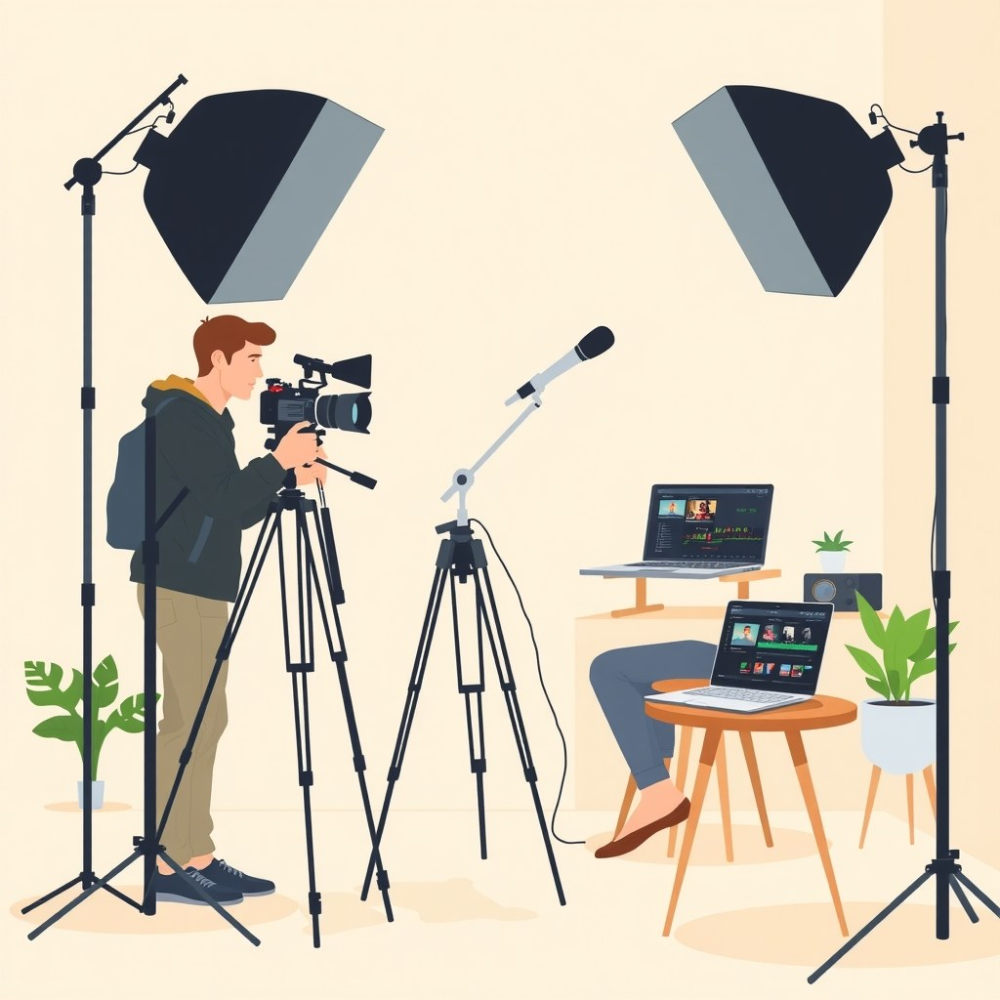
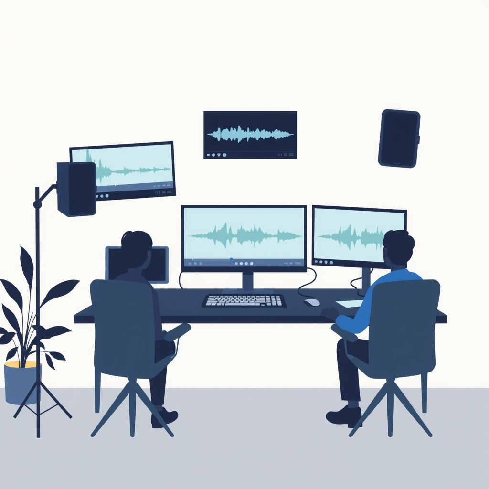

Apa yang Berubah dari Top Branded Video MrBeast

Foto: Caraclements / Wikimedia Commons
Ilustrasi AIData industri media digital yang dirilis oleh Tubefilter pada 17 Agustus 2026 mencatat integrasi konten bersponsor milik MrBeast kembali menduduki peringkat teratas dalam jajaran Top 5 Branded Videos of the Week. Dalam edisi kali ini, MrBeast memimpin barisan bersama kreator dan saluran besar dunia seperti Disney (The Mouse), Quenlin Blackwell, Manuel Enrique, hingga Alisha Marie.
Hal yang menarik dari pencapaian tersebut bukan hanya soal nilai kontrak yang spektakuler atau besarnya total angka tontonan, melainkan bagaimana teknik pengemasan iklan itu dieksekusi di lapangan. Berbeda dengan tayangan komersial tradisional yang sering kali memotong alur utama secara mendadak dan kaku, kampanye video bersponsor MrBeast menyatu langsung ke dalam narasi utama video. Penonton tetap berada di dalam alur cerita tanpa merasa dipaksa menonton iklan terpisah.
Selama bertahun-tahun, industri periklanan video pendek dipenuhi oleh potongan iklan yang mengganggu retensi. Ketika sebuah video tiba-tiba berhenti di tengah jalan hanya untuk menampilkan presenter memegang produk, grafik retensi penonton biasanya akan langsung merosot tajam. Fenomena ini yang membuat algoritma platform seperti TikTok, YouTube Shorts, dan Instagram Reels menurunkan jangkauan video tersebut secara otomatis karena dinilai tidak disukai oleh pengguna.
Bagi ekosistem kreator global dan clipper di Indonesia, pergeseran format ini menegaskan satu poin penting: era penempatan iklan kasar sudah lewat. Penonton platform berdurasi pendek makin sensitif terhadap potongan klip yang sengaja ditempel untuk jualan. Jika kamu ingin menghasilkan konten bersponsor yang disukai algoritma sekaligus disukai penonton, pola eksekusi ala MrBeast menjadi referensi utama yang wajib dibedah dan dipraktikkan secara sistematis.
Kenapa Integrasi Sponsor MrBeast Selalu Berhasil
Alasan utama mengapa penonton jarang sekali melewati (skip) bagian iklan pada video MrBeast terletak pada teknik menyamarkan batas antara konten hiburan dan pesan promosi. Dalam laporan Tubefilter disebutkan bahwa pengemasan produk dilakukan melalui konsep cerita langsung, bukan presentasi produk kaku yang terasa seperti brosur berjalan.
Ketika sponsor diperkenalkan, MrBeast tidak mengubah intonasi suaranya menjadi nada jualan yang formal. Ia tetap mempertahankan energi, kecepatan bicara, serta gaya visual yang sama persis seperti saat ia memimpin tantangan berhadiah jutaan dolar. Hal ini membuat penonton tidak menyadari bahwa mereka sedang berpindah dari segmen hiburan murni ke segmen promosi merek.
Secara garis besar, ada tiga alasan teknis mengapa strategi tersebut terbukti menjaga angka retensi penonton tetap tinggi di semua lini:
- Transisi Mulus (Seamless Bridge): MrBeast tidak pernah menghentikan aksi video lalu tiba-tiba berbicara dengan gaya presenter radio. Promosi produk selalu dihubungkan dengan kalimat transisi logis yang masih ada kaitannya dengan tantangan atau alur utama cerita.
- Produk Dijadikan Properti Cerita: Alih-alih hanya memperlihatkan kemasan produk di depan kamera, produk yang dipromosikan dijadikan alat pendukung dalam aksi video. Misalnya, merek minuman atau aplikasi dijadikan bagian dari syarat tantangan, alat bertahan hidup, atau konsumsi resmi peserta saat aksi berlangsung.
- Mempertahankan Pacing dan Energy: Tempo pemotongan gambar (editing pacing), efek suara (SFX), dan nada bicara saat menyampaikan pesan sponsor dibuat sama persis dengan bagian video lainnya. Tidak ada penurunan ritme visual yang memberi sinyal kepada jempol penonton untuk menggeser layar ke atas.
Pola ini terbukti sangat ampuh. Penonton yang sedang tenggelam dalam rasa penasaran terhadap hasil akhir tantangan tidak akan mau melewati bagian video tersebut, karena pesan sponsor itu sendiri dikemas mengikat dan menyatu dengan jawaban atas rasa penasaran mereka.
Eksekusi MrBeast memang didukung oleh tim produksi raksasa dengan anggaran riset yang sangat besar. Namun, prinsip dasar transisi kontekstual dan pemeliharaan retensi visualnya murni merupakan teknik editing yang bisa dipraktikkan langsung menggunakan aplikasi edit video standar di HP maupun laptop sederhana.
Artinya buat Clipper Indonesia dan Monetisasi Klip
Bagi clipper lokal yang sedang membangun portofolio atau mencari peluang kerja sama iklan dengan UMKM dan brand digital, tren terbaru ini membawa dampak langsung pada cara kerja harian. Banyak clipper pemula di Indonesia selama ini terjebak pada kebiasaan menempelkan gambar produk atau logo sponsor secara tiba-tiba di pertengahan video (overlay kasar). Efeknya sangat fatal: penonton langsung melompati video tersebut dan sinyal algoritma membaca konten sebagai video berkualitas rendah yang ditinggalkan penonton.
Ketika grafik tontonan rata-rata (watch time) anjlok, peluang klip untuk masuk ke halaman FYP atau rekomendasi utama menjadi sangat kecil. Pemilik merek yang membayar jasa klip pun merasa rugi karena pesan promosi mereka tidak pernah ditonton sampai habis oleh audiens target.
Jika kamu mengelola akun pemotong video (clipper), memahami cara membuat video branded content ala MrBeast menjadi kunci penting untuk meningkatkan nilai jual jasamu. Berikut adalah perubahan nyata yang perlu kamu sesuaikan di lapangan:
- Penawaran ke Klien Lebih Menarik: Saat mengajukan kerja sama promosi ke brand lokal atau kampanye produk digital, kamu tidak hanya menawarkan space iklan tempel murah, melainkan garansi bahwa iklan dikemas secara terintegrasi tanpa merusak statistik retensi akun.
- Memaksimalkan Penggunaan Template dan Overlay: Kamu bisa memanfaatkan teknik pengeditan yang rapi seperti panduan di tutorial overlay video di X agar elemen merek masuk saat aksi sedang mencapai puncak emosi.
- Pertumbuhan Akun Lebih Organik: Penonton tidak merasa terganggu oleh hadirnya produk, sehingga angka pengikut terus bertambah secara alami sebagaimana dijelaskan dalam panduan menambah followers instagram clipper.
- Meningkatkan Nilai Payout dan Rate Card: Akun clipper yang mampu menjaga grafik retensi di atas 70% pada video bersponsor memiliki posisi tawar yang jauh lebih kuat untuk meminta nilai pembayaran (rate card) lebih tinggi dari pemilik merek.
| Parameter | Metode Klip Kasar | Metode Branded ala MrBeast |
|---|---|---|
| Penurunan Retensi | Turun tajam (30%-50% penonton kabur) | Stabil (penonton tidak menyadari transisi) |
| Respons Penonton | Merasa terganggu / meninggalkan komentar negatif | Memberi respon positif di kolom komentar |
| Daya Tarik Sponsor | Nilai bayaran rendah per tayangan | Potensi nilai kontrak bertahap dan berulang |
| Potensi Viral (FYP) | Kecil karena terdeteksi sebagai spam iklan | Tinggi karena algoritma menyukai retensi tinggi |
Yang Bisa Kamu Lakukan untuk Bikin Branded Content ala MrBeast
Untuk mulai menerapkan strategi ini pada klip pendek buatanmu, kamu tidak perlu menunggu tawaran sponsor berharga miliaran rupiah. Kamu bisa melatih kemampuan mengedit klip bersponsor menggunakan produk UMKM lokal, layanan aplikasi digital, atau bahkan materi latihan mandiri secara konsisten. Urutan langkah praktisnya dapat kamu ikuti secara runtut di bawah ini:
Temukan Titik Potong Relevan (Golden Moment)
Jangan pernah menaruh pesan sponsor di awal detik pertama (hook utama). Biarkan detik 1 hingga detik 3 fokus sepenuhnya pada konflik, pertanyaan besar, atau aksi utama video yang memicu rasa penasaran. Baru setelah penonton terikat oleh hook, cari titik tenang sementara di detik ke-8 hingga ke-15 untuk menyisipkan materi promosi secara halus.
Buat Jembatan Konteks (Contextual Bridging)
Gunakan teknik menghubungkan konteks secara verbal maupun visual. Jika materi klip mentah membahas tentang pentingnya konsistensi kerja kreator, jembatan promosi produk aplikasi manajemen tugas atau kopi sachet bisa dimasukkan dengan kalimat transisi seperti: "Nah, biar konsistensi fokus itu nggak gampang buyar di tengah jalan, ada satu alat simpel yang biasa dipakai...". Hindari ucapan kaku seperti: "Sponsor video kali ini adalah...".
Gunakan Subtitle Dinamis dan Efek Visual Pendukung
Pastikan gaya teks subtitle, pergerakan kamera (quick zoom), dan efek suara (SFX pop/woosh) dari materi sponsor dibuat identik dengan gaya editing utama klip. Jangan menghentikan musik latar secara mendadak atau mengubah warna font subtitle menjadi sangat berbeda hanya karena bagian tersebut memuat elemen iklan.
Selalu Tutup dengan Call to Action yang Singkat dan Jelas
Ajakan bertindak di akhir klip pendek cukup 2 hingga 3 kata saja. Hindari penjelasan panjang lebar mengenai cara pembelian atau syarat rincinya. Cukup berikan instruksi langsung yang mudah diingat seperti: "Cek tautan di profil" atau "Detailnya ada di bio" sambil kembali memutar potongan aksi penutup dari video utama.
Dengan mempraktikkan empat urutan ini, video klip buatanmu tidak hanya enak ditonton dari awal sampai akhir, tetapi juga memiliki nilai estetika profesional yang sangat disukai oleh para pemilik merek.
Jika kamu ingin mendalami secara menyeluruh bagaimana ekosistem kerja clipper profesional dikelola dari nol sampai menghasilkan bayaran rutin, kamu bisa mengecek panduan lengkap di katalog artikel BiB untuk mempelajari seluk-beluk teknik editing, pengelolaan retensi, dan strategi monetisasi terkini.
Yang Perlu Dipantau dalam Tren Video Sponsor Clipper
Meskipun tren gaya branded video ala MrBeast ini terbukti memberikan hasil sangat positif pada indikator performa video pendek, ada beberapa hal mendasar yang masih terus berkembang dan perlu kamu pantau perkembangannya secara berkala agar tidak salah langkah:
- Kebijakan Label Komersial Platform: Algoritma TikTok, Instagram Reels, dan YouTube Shorts semakin ketat memantau konten yang mengandung unsur promosi tanpa mengaktifkan fitur Paid Partnership atau centang promosi berbayar. Pantau terus panduan resmi platform agar akun clipper milikmu tidak terkena pembatasan jangkauan (shadowban) akibat dianggap menyembunyikan konten komersial.
- Kejelasan Regulasi Lisensi Audio: Saat memasukkan bagian promosi merek ke dalam klip, pastikan lagu latar (BGM) atau efek suara yang dipakai aman dari klaim hak cipta komersial. Musik yang aman untuk penggunaan pribadi belum tentu memiliki izin lisensi jika disisipkan ke dalam video yang bermuatan promosi bisnis.
- Evolusi Perilaku Penonton Lokal Indonesia: Penonton di Indonesia sangat menyukai kepolosan, kehangatan, dan humor lokal. Perhatikan apakah transisi iklan gaya MrBeast perlu disesuaikan dengan sisipan komedi atau cerita khas lokal agar tidak terkesan terlalu kaku, terlalu barat, atau terlalu berlebihan di mata audiens tanah air.
- Perkembangan Alat Otomatisasi Berbasis AI: Pemotong video berbasis AI makin marak digunakan untuk membuat klip otomatis. Namun, kepekaan dalam menyusun jembatan narasi kontekstual ala MrBeast masih memerlukan sentuhan editing manusia agar rasa humor dan emosi dalam transisi sponsor tetap hidup.
Secara keseluruhan, kunci sukses pembuatan konten bersponsor untuk clipper bukan terletak pada seberapa canggih laptop atau software mahal yang kamu gunakan, melainkan pada kepekaanmu dalam menyusun alur cerita. Selama kamu bisa menjaga agar jembatan promosi terasa logis, menghibur, dan menghormati waktu penonton, audiens akan dengan senang hati menikmati klip buatanmu dari awal hingga detik terakhir.
Sumber
- Top 5 Branded Videos of the Week: MrBeast and the Mouse — Tubefilter · 17 Agu 2026